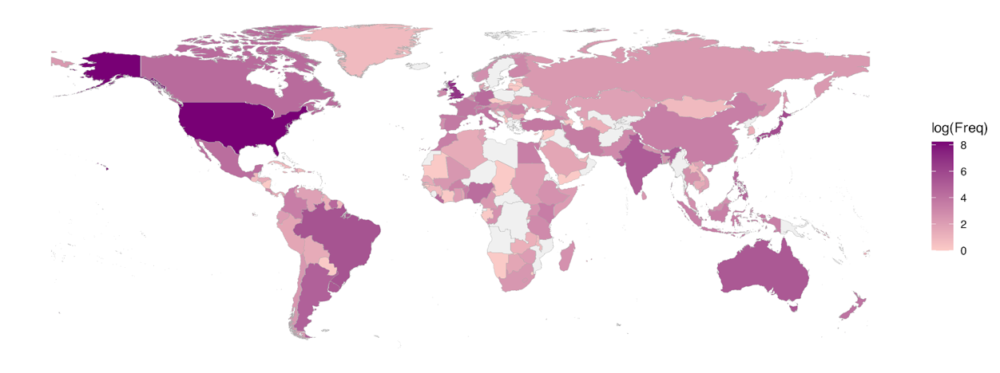
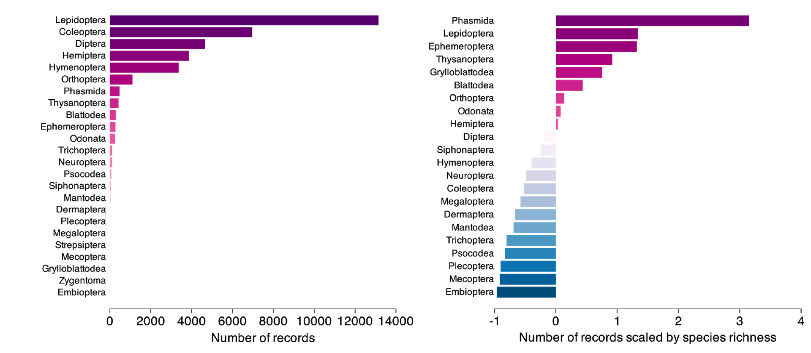

Results of a semi-automated evidence gap analysis for insect conservation actions
Explore our findings below. Insect conservation actions are clustered by biome, region and taxon. Select one to focus the results.
Expand each section to learn more about our results.
The figures displayed show the number of records (research articles) 'tagged' with each conservation action and levels of the other variables. Tagging was conducted using semi-supervised topic modelling of record abstracts. Read the Methods for more details.
Our action tagging algorithm was able to identify actions in 23.0% of the evidence base at the two highest levels of the conservation actions ontology. The second level includes broad classes of actions (e.g. "Habitat & natural process restoration") without concrete action steps or management recommendations. We were able to tag 8.1% of articles with more specific conservation strategies (e.g. "increase aquatic habitat complexity") in the third level of the ontology (Figure 3a-f), and 7.9% at the fourth level of specificity in conservation actions (e.g. "drill holes in concrete river beds and river banks"). Beyond the third and fourth levels, the number of actions that were tagged is highly dependent on the number of ontology items at that level, which tapers off rapidly after the third level as actions get more specific and have fewer nested actions. There are 541 ways to be tagged at the third level, 355 at the fourth level, 207 at the fifth level, and only 84 at the sixth level where actions are highly specific (e.g. "undersow spring cereals with floral resources such as clover").
We were able to classify records to biomes in 16.2% of cases (Figure 4). Most records were tagged as studies taking place in forests (41.4%) or terrestrial artificial habitats (28.1%) such as arable land, pastures, and urban areas, with fewer records tagged as savanna (9.9%), grassland (7.1%) artificial aquatic habitats (6.0%), shrubland (4.5%), or wetlands (2.9%). When considering records that were tagged with both a conservation action and a biome, there was a relative increase in the number of studies taking place in artificial aquatic (+5.2%) and terrestrial (+2.2%) habitats, and fewer studies taking place in forests (-3.4%) and wetlands (-1.4%) compared to the prevalence of all studies in those habitats. Cross-tabulations of insect taxa and biomes (Figure 5) corresponded fairly well to where subject experts would expect taxa to be most represented.
Our algorithm to parse geographical information tagged 65.4% of records with a study location at the continental level and 59.1% at the country level. Only 14.6% of all records were tagged with both a country and a conservation action (Figure 6) across 91 different countries, though the majority of studies tagged with both an action and country were from the United States (52.1%).

Our taxonomy tagging approach was able to identify insect taxa at the order level in 70.6% of records. The most well-studied taxa (Figure 7a) were butterflies and moths (Lepidoptera, 37.2% of studies), beetles (Coleoptera, 19.7%), flies and mosquitos (Diptera, 13.2%), true bugs (Hemiptera, 11.0%), bees, wasps, and ants (Hymenoptera, 9.6%), and grasshoppers (Orthoptera, 3.1%), with all other taxa represented by less than 2% of studies. Although some taxa were less well-represented in the subset of articles tagged with both conservation actions and taxa, such as flies and mosquitos (Diptera, -4.6%), or increased in representation such as true bugs (Hemiptera, +2.4%) and bees and wasps (Hymenoptera, +2.1%), most remained fairly consistently represented in the conservation actions subset, likely due to the high proportion of studies that were tagged with taxa.

Proportional to the estimated species richness of each insect order (Figure 7b), the most over-studied taxa were walking sticks (Phasmida), butterflies and moths (Lepidoptera), mayflies (Ephemeroptera), and thrips (Thysanoptera), and the most under-studied taxa were webspinners (Embioptera), scorpionflies (Mecoptera), stoneflies (Plecoptera), and caddisflies (Trichoptera). The discrepancies in the number of studies compared to species richness is likely due to the charismatic nature (e.g. walking sticks, butterflies) of the most over-studied taxa, their association with biological phenomena (e.g. mayflies) or their status as agricultural pests (e.g. many moths and thrips). Many of the taxa that were understudied are aquatic for at least part of their life cycle (e.g. Trichoptera, Plecoptera) and may be described in the literature as "aquatic invertebrates" rather than by scientific name due to sampling methods, and therefore were missed by our dictionary tagging method because "aquatic invertebrates" cannot be uniquely identified to a taxonomic group.
Select a variable (biome, taxa or region) to crosstabulate against conservation actions.